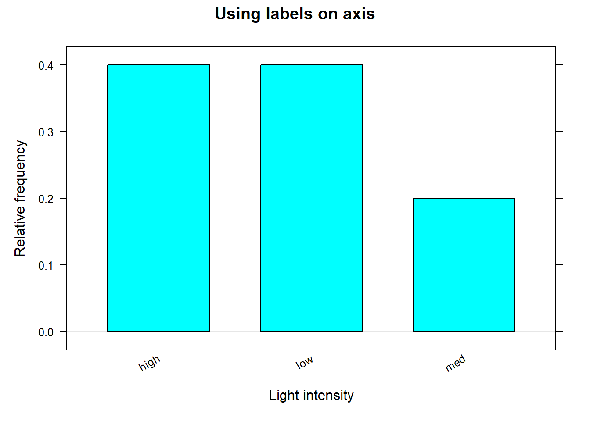
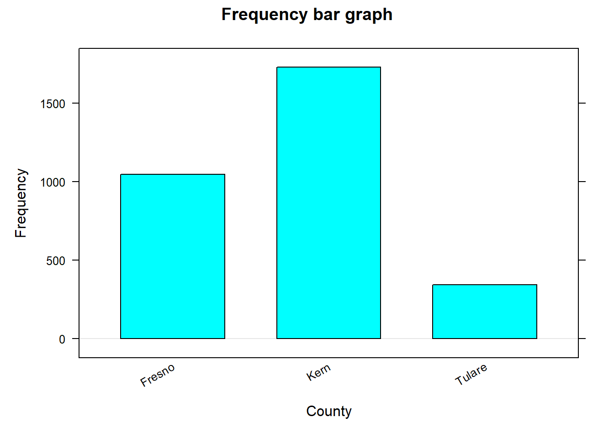
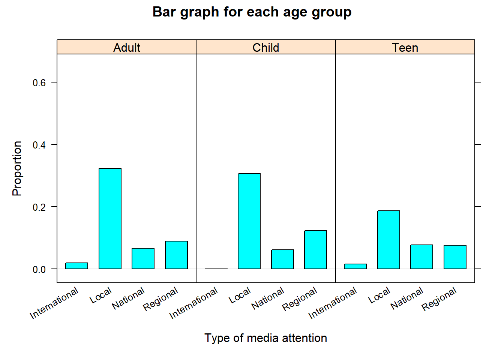
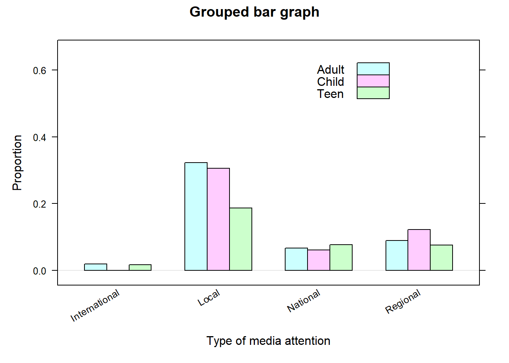
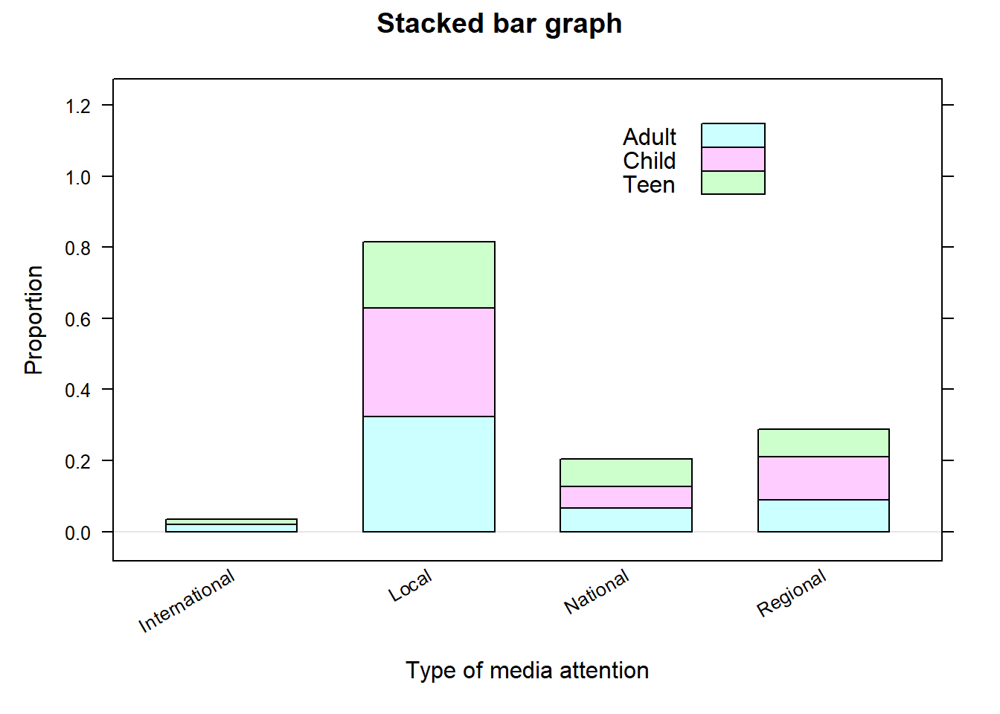

AI art generated from the text “Summarizing categorical data”
Here we cover the following graphically and numerical summaries:
Bar graphs
Frequency tables
Contingency tables
Comparative or conditional plots
9.1 Single categorical variable
A bar graph or plot may be used to visualize the distribution of levels for a single categorical variable. The height of the bar for each category is equal to the frequency (number of observations), relative frequency of observations, or percentage of observations in the category. Generally, bar graphs leave some space in between each bars to highlight that there is no ordering in the classes. These graphs provides a nice visual of number observations in each level of a given categorical variable.
### bargraph( ~ x , data, ylab, xlab, type)
# x: Replace x with the name of the variable of interest
# data: Set equal to the name of the dataframe being used
# xlab: Set equal to the label for x-axis (optional)
# xlab: Set equal to the label for y-axis (optional)
# main: Set equal to the title of the plot (optional)
# type: Set equal to "frequency" (default) or "proportion"
Note that the type argument specifies whether to display frequencies or proportions. Many of the R functions used in this resource will have identical arguments, therefore while the arguments will be provided for any functions used, arguments such as x, data, xlab, … will generally no longer be described.
Note
The case study data given in Chapter 1 consists of three variables labeled as Light, Turbidity, and Survival in the data frame dssurve. The case study data given in Chapter 3 consists of several variables, including the categorical variable county. Here, the categorical variables are summarized graphically.
# Import data from case study on delta smeltdssurv<-read.csv("datasets/dssurv.csv")# Load the dplyr package. This package provides mutate()library(dplyr)# Note: mutate( 'dataframe name' ,'new variable' = 'function of variable in data frame', ...)# Convert variables Light and Turbidity to factorsdssurv<-mutate(dssurv, Light=as.factor(Light) , Turbidity=as.factor(Turbidity))# Import data from case study on air pollutionpmdf<-read.csv("datasets/dailyPM10.2021.csv")# Convert variable county to a factorpmdf<-mutate(pmdf, county=as.factor(county))
The following code creates a bar graph of the variables Light and county:
Code
# Load the 'mosaic' package which provides the 'bargraph' function.library(mosaic)bargraph(~Light , # Create a bar graph for the 'Light' variable. data=dssurv , # Use the 'dssurv' data frame. type="proportion" , # Display proportions of each category. ylab="Relative frequency" , # Set the y-axis label. xlab="Light intensity" , # Set the x-axis label. main="Using labels on axis")# Set the title of the plot.bargraph(~county , # Create a bar graph for the 'county' variable. data=pmdf, #Use the 'pmdf' data frame. type="frequency" , # Display the frequency of each category. ylab="Frequency" , # Set the y-axis label. xlab="County", # Set the x-axis label. main="Frequency bar graph")# Set the title of the plot.

Figure 9.1: Frequency bar graph

Figure 9.2: Relative frequency bar graph
Note that medium light intensity was less common than other light intensities. For the PM10 data, Kern county has more monitoring stations compared to Fresno and Tulare.
The bar graphs provide a clear visual of the distribution of levels of the categorical variables. To numerically summarize a categorical variables, one can use the tally() function to create the basis for a frequency or relative frequency table:
R functions
### tally( ~ x , data, format, useNA)
# format: set equal to "count" (default), "proportion", or "percent"
# useNA: should the table count missing values? Set equal to "no"
# (never consider missing values), "ifany" (only if the
# count is positive) , or "always" (even for zero counts).
Note
The following code helps create a frequency or relative frequency table for the variables Light and county:
# Use the tally() function from the mosaic package to # compute a relative frequency table for the "Light" variable in # the dssurv dataset.tally(~Light , data=dssurv , format="proportion")#> Light#> high low med #> 0.4 0.4 0.2# Use the tally() function to compute a frequency table for # the "county" variable.tally(~county , data=pmdf , format="count")#> county#> Fresno Kern Tulare #> 1046 1727 342
The tally() output provides a clear numerical summary of the data by providing the count/proportion/percentage of observations in each each level for the variable of interest. The output from tally() can then be used to form a relative frequency table. Such tables make it easier to see the frequency counts for a categorical variables than by looking at the actual data.
9.2 Two or more categorical variables
A bar graph can also graphically summarize two categorical variables by providing a bar plot for a given variable at each level of another categorical variable. Such graphs are generally referred as comparative plots or conditional plots. Here, we create three comparative bar graphs using bargraph(). For each, we have to specify a grouping variable:
R functions
### Creates a bar graph at each level of another categorical variable:
### bargraph( ~ x | gfactor , data, ylab, xlab, type)
# gfactor: Replace with a grouping (categorical) variable.
# This variable should have two or more levels, and
# the resulting graph will show the distribution of "x"
# at each level of the grouping variable.
#
###
###
### Creates grouped/clustered bar graph:
### bargraph( ~ x , groups, data, ylab, xlab, type, auto.key)
# groups: Set equal to the grouping (categorical) variable.
# This variable should have two or more levels, and
# the resulting graph will show the distribution of "x"
# at each level of the grouping variable.
# auto.key: A list of the form list( x, y , corner = c(0, 0)), where
# x is set equal to the location on the x-axis (from 0 to 1). Similarly for y.
# corner is set equal to one of c(0,0) (bottom left corner of legend), c(1,0),
# c(1,1) and c(0,1).
#
###
###
### Creates a stacked bar graph:
### bargraph( ~ x , groups , data, ylab, xlab, type, stack)
# stack: Set equal to TRUE for a stacked barchart. Default is FALSE
#
Note
The case study in Chapter 5 contains many variables dealing with characteristics related to school shootings. The following code creates a bar graphs of Media_Attention for each level of AgeGroup:
# Import data # Note: na.strings=c("","NA") tells R to treat any blank # and NA entries in the csv file as NA values. ssd<-read.csv("datasets/ssdsample.csv" , na.strings=c("","NA"))# Next, we use the mutate() function to # convert AgeGroup, Media_Attention, and During_School # variables in the ssd dataframe to factors:ssd<-mutate(ssd, AgeGroup=as.factor(AgeGroup), Media_Attention =as.factor(Media_Attention), During_School=as.factor(During_School))bargraph(~Media_Attention|AgeGroup , data=ssd , type="proportion" , ylab="Proportion" , xlab="Type of media attention" , main="Bar graph for each age group")bargraph(~Media_Attention , group=AgeGroup , data=ssd , type="proportion" , ylab="Proportion" , xlab="Type of media attention" , auto.key =list(x =.6, y =.76, corner =c(0, 0)) , main="Grouped bar graph")bargraph(~Media_Attention , group=AgeGroup , data=ssd , type="proportion" , ylab="Proportion" , xlab="Type of media attention" , stack =TRUE , auto.key =list(x =.6, y =.76, corner =c(0, 0)) , main="Stacked bar graph")

(a) Barplot for each age group

(b) Barplot grouped by age group

(c) Barplot stacked by age group
Figure 9.3: Examples of bargraphs.
All three graphs convey the proportion of observations in each category of Median_Attention for a given age group. For example, note that the highest media attention being the national level appears to be about the same for all age groups, but it is not the case for local and regional levels.
tally() may also numerically summarize two or three categorical variables to provide the basis for a two-way or three-way contingency table. If one variable is designated a response variable and the other an explanatory variable, then the response variable is specified for y and the explanatory for x:
R functions
### tally(y ~ x , data, format="count", useNA)
# y: replace y with the name of the response categorical variable.
# x: replace x with the name of the explanatory categorical variable.
# NOTE: format must set equal to count
#
###
###
### tally(y ~ x + z , data, format="count")
# x: replace z with the name of the additional explanatory categorical variable.
#
For two-way or three-way tables, if count is set to proportion or percent in tally(), it will provide marginal/conditional proportions/percentages of observations in each level of one variable, conditional on the levels of another variable. Comparing the unconditional proportions to their conditional counterparts allows one to assess if the data suggest an association between two categorical variables. An unconditional proportion is a proportion measured out of the total sample size, while a conditional proportion is a proportion measured under a specific level of another variable.
Note
For two-way table, if count is equal proportion or percent, it will provide the marginal/conditional proportions/percentage of observations in each each level of Median_Attenion for each level of AgeGroup:
# Conditional proportionstally(Media_Attention~AgeGroup , data=ssd , format="proportion" , useNA="no")#> AgeGroup#> Media_Attention Adult Child Teen#> International 0.03859649 0.00000000 0.04511278#> Local 0.64912281 0.62500000 0.52631579#> National 0.13333333 0.12500000 0.21553885#> Regional 0.17894737 0.25000000 0.21303258# Unconditional proportionstally(~Media_Attention , data=ssd , format="proportion" , useNA="no")#> Media_Attention#> International Local National Regional #> 0.03562945 0.60807601 0.16627078 0.19002375
Note that the chances of Media_Attention being “National” varies across age groups. Such behavior is consistent with these variables being potentially associated.